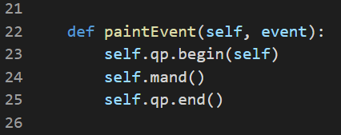
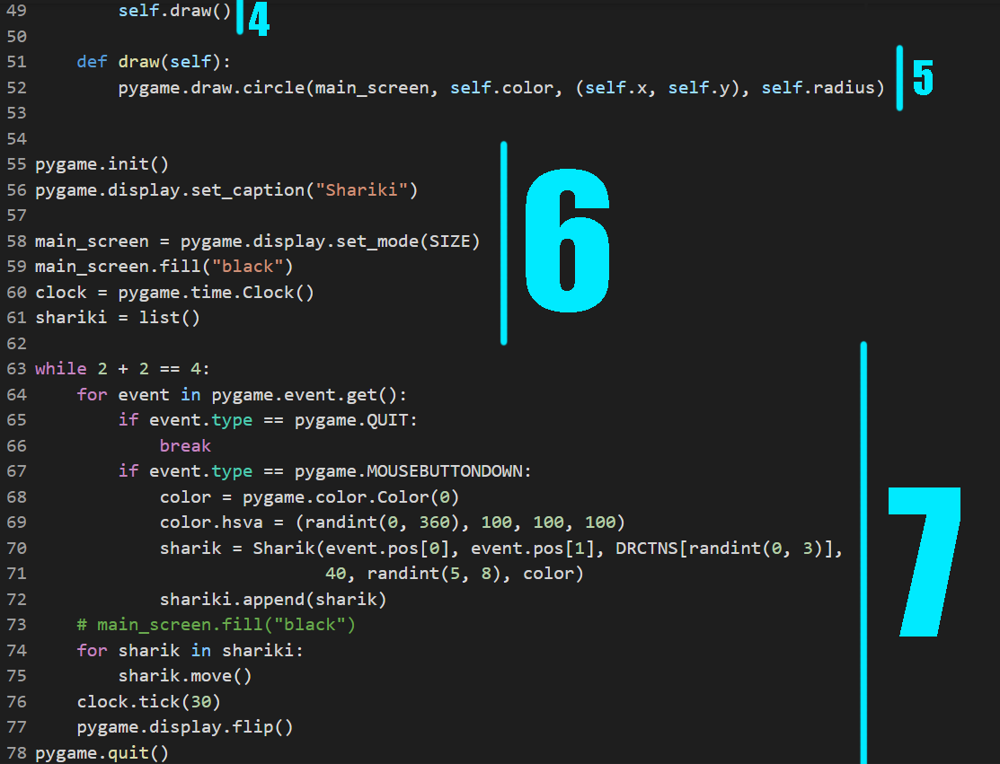
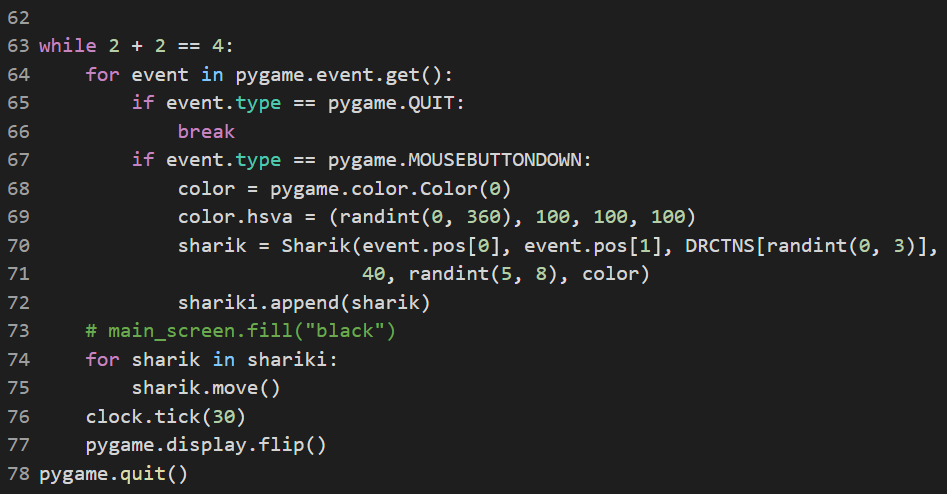

Красивая штука, неправда ли?
А эти?
Согласитесь, выглядит классно. Хотя на первый взгляд и кажется, что нарисовать такое сложно, это не так. Такие «поделки» может смастерить каждый, нужно всего лишь немного магии программирования, и это совсем не так сложно, как может казаться!
Итак, сейчас Вы узнаете, как при помощи простых программ на языке Python создавать красивые картинки, чтобы потом хвастаться, что Вы умеете создавать компьютерную графику с использованием программирования.
Именно так называется эта завораживающая пушистая чёрная дыра на первой картинке
Множество Мандельброта – это фрактал, т.е. сложный математический объект. Множество Мандельброта и подобные ему описываются мудрёными математическими формулами и последовательностями.
В своём изначальном виде они выглядят страшно и непонятно, но с помощью программирования можно заставить их выглядеть красиво, представив эту сложную математику в виде точек на плоскости. Прямо как параболу на уроках алгебры в школе.
Если у Вас уже установлен Python и любая IDE, можете переходить сразу к шагу с установкой нужных библиотек.
Итак, для начала нужно скачать и установить Python. Сделать это можно на официальном сайте языка. В качестве текстового редактора для кода можно использовать бесплатную программу Wing IDE (Wing 101), которую также можно скачать в интернете, не беспокоясь о безопасности.
После установки нужных программ можно перейти к скачиванию нужных для рисования библиотек. Для работы понадобятся PyQT5 и PyGame. Установим их через командную строку. Откройте командную строку и напишите сначала “pip install PyQT5”, а затем “pip install pygame”. Готово. Всё, что нужно, чтобы творить чудеса, у нас есть.
Стоит сказать, что Python – это чувствительный язык. Из-за отсутствия фигурных скобок и точек с запятой приходится разграничивать блоки кода отступами, поэтому их соблюдение обязательно. Обычно отступ одного блока – это 4 пробела. Все пробелы стоят здесь не просто так!
Итак, ниже Вы можете видеть весь программный код, который Вам предстоит написать. Разберём написанное по частям.
1) Импортируем (подключаем) нужные части из установленных библиотек
Модули “sys” и “PyQt5” с его отдельными частями (QApplication, QWidget) нужны, чтобы запускать само окно, в котором будет картинка. Qpainter, QColor, Qpen и Qpoint потребуются для рисования. Функция sin из библиотеки math нужна, чтобы выбирать цвета для раскраски.
2) Создание шаблона окна для рисования
Слово “class” в программировании используется для описания шаблона любого объекта, который хочет создать программист. В данном случае описывается шаблон окна, который мы назовём Mand (от названия множества). QWidget в скобках указывает на то, что Mand – это окно.
Слово “def” означает, что дальше будет описана некая функция, которую Mand умеет выполнять.
Функция “__init__” выполняется всегда при создании конкретного объекта класса Mand. В ней задаются параметры окна (строки 10-14) и цветовая палитра (строки 15-20). Как раз для создания цветов в палитре и используется функция “sin”.
3) Встроенное в PyQT5 рисование
Функция “paintEvent” умная, она выполняется сама при запуске окна. Именно в ней происходит отрисовка, которая описана в следующей функции, функции “mand”.
4) Сам процесс отрисовки множества Мандельброта
В функции “mand” (опять же от названия множества) происходит та самая страшная математика. В происходящее здесь можно не особо вникать, просто верить на слово, что это работает :D. Здесь задаются параметры комплексной плоскости и вычисляются координаты каждой новой точки на этой плоскости. С помощью QPen происходит отрисовка точки (QPoint) нужного цвета из палитры (QColor(*self.palette[cnt])) на вычисленных координатах. Даже звучит страшно… но это работает, а результат довольно красивый, и это главное!
5) Финальные строки
Код, написанный без отступов – это код, который будет выполнен при запуске программы. Т.е. всё, что было написано выше – это описание поведения программы, а сами действия, которые она будет делать, написаны на строчках 47-50.
Строка 47 порождает в памяти компьютера окно. Строки 48 и 49 рисуют на созданном окне нужный рисунок, а строка 50 нужна для корректного завершения программы.
Всё. Готово! Теперь вы умеете рисовать множество Мандельброта с помощью языка Python и его библиотеки PyQT5, поздравляю!
Вам наверняка интересно, можно ли изменить цвета рисунка, чтобы найти идеально подходящее для вас сочетание? И ответ однозначен – да!
Чтобы изменить цвета, нужно изменить числа на 16, 17, 18 строках, которые идут последними во внутренних скобках. Да-да, те, которые с точкой. Да, это дробные числа.
Вот некоторые примеры того, что может получиться, если поиграться с этими числами:
Красиво, согласитесь...?
А так можно назвать картинку ниже
Что? Не похоже на шарики? А ведь это они и есть! Итак, давайте разбираться.
Представленное выше скопление толстых линий – это на самом деле всего лишь летающие шарики, отскакивающие от стен. Ниже Вы можете видеть код. Снова разберёмся в происходящем по частям.
1) Подключение библиотек, задание начальной информации об окне и шариках
С помощью библиотеки pygame, установленной ранее, будут реализованы сами шарики, а функция “randint” из библиотеки “random” нужна, чтобы генерировать случайные числа, это понадобится дальше в коде.
На 3 строке задаются размеры окна для отрисовки, его ширина и высота. На строке 4 создаётся список возможных направлений будущих шариков. l_u – налево вверх, r_u – направо вверх, r_d - направо вниз, l_d – налево вниз.
2) Создание шаблона шарика
Знакомая конструкция со словами “class” и “def __init__”, неправда ли? Только на этот раз у функции “__init__” в скобках написаны разные слова. Эти слова – это параметры (аргументы, как в алгебре у f(x)) функции, то, каким будет создан шарик.
x, y – координаты, direction – направление, куда шарик летит, radius – радиус шарика, speed – скорость полёта, color – цвет шарика. Все эти параметры функции ”__init__” присваиваются «новорождённому» шару.
На 15 строчке средствами pygame происходит рисование фигуры с заданными параметрами.
3) Проверка, не врезался ли шар в стену
Функция “check” так и переводится – “проверка”. В ней каждый шарик спрашивает себя, не врезался ли он в стену. Если врезался, т.е. если координаты его центра, к которым прибавили его радиус, вышли за границу экрана, нужно повернуть в противоположную сторону, т.е. поменять направление(direction).
4) Движение
Название функции, “move”, так и переводится – “движение”. Благодаря ей шарик может перемещаться.
Сначала выполняется функция “check”, описанная выше. После этого, когда шарик выбрал, в какую сторону ему лететь, он начинает движение. На строчках 41-48 координаты шарика меняются. В зависимости от направления они либо увеличиваются, либо уменьшаются на скорость. В конце шарик рисуется в новых координатах (функция draw, находящаяся ниже).
5) Сложнейшая функция рисования
Эта функция до невозможности сложна... Шутка! Она просто снова рисует круг с нужными параметрами и в нужном месте средствами библиотеки pygame. Всё.
6) Подготовка к выполнению основной части
Опять строки без отступа, которые и будут выполнены при запуске.
Здесь программа понимает, что она будет использовать pygame, даёт название окну для рисования, задаёт его размеры и фон (чёрный), создаёт часы, отвечающие за количество отрисовок в секунду (строки 55-60). На строке 61 создаётся пустой список шариков, которые мы запустим.
7) Основная часть
Итак, чтобы отображалось окно нужен бесконечный цикл, который прервётся только тогда, когда будет нажат крестик. Именно это и происходит далее: “while 2 + 2 == 4”, т.е. условие, которое верно всегда.
Далее программа спрашивает у pygame, какие события случились в каждую секунду её выполнения. Если случилось событие “pygame.QUIT”, т.е. то самое нажатие на крестик, нужно выйти из бесконечного цикла и завершить программу. Если же произошло событие “pygame.MOUSEBUTTONDOWN”, т.е. была нажата левая кнопка мыши, начинается самое интересное.
В этот момент нужно создать новый шарик. Наши шарики будут появляться в месте нажатия сколько угодно раз! Итак, в начале создаётся случайный цвет для нового шарика на строках 68 и 69 с использованием функции “randint”, подключенной в самом начале.
И наконец появляется новоиспечённый объект “sharik” класса “Sharik”! Ему в качестве параметров передаются позиция мыши как начальные координаты, случайное(снова с функцией “randint”) направление из списка направлений “DRCTNS”, созданного в самом начале, радиус равный 40, скорость, опять выбираемая случайно(от 5 до 8) и цвет, заданный ранее(строки 68, 69). Та-дам! Шарик создан!
>Дальше осталось только пройтись по списку шариков и сказать каждому, чтобы тот двинулся!
Строки 76 и 77 отображают изменения на окне, а самая последняя строчка закрывает окно pygame после выхода из бесконечного цикла. Готово!
Получается вот такая красота:
Каждый раз перезапуская программу, Вы сможете наблюдать разную картинку, ведь скорость и цвет шарики получают случайно! Но где же всё-таки сами шарики, спросите Вы? Почему это шарики, если это линии? А всё очень просто.
Видите в коде зелёную строчку “# main_screen.fill(“black”)”? Символом “#” в Python обозначаются комментарии, т.е. строчки, которые при выполнении программы будут проигнорированы. Попробуйте убрать этот символ и стоящий после него пробел, а потом запустить программу снова. Теперь Вы видите не линии, а те самые шарики!
Всё дело в том, что 72 строка в каждый момент времени перед отрисовкой всех шариков закрашивает всё окно чёрным цветом, стирая след шаров. Если же её убрать, то за каждым кругом будет тянуться след, который и выглядит в итоге как толстая линия. Вот где прячутся шарики!
Чтобы сделать шарики разных размеров или сделать им ещё больший разброс скорости, достаточно на строке 70 изменить передаваемые в шарик параметры. Можно сделать их случайными, чтобы все шарики были ещё и разного размера, а также двигались совсем по-разному.
Для этого нужно вставить на место этих параметров ту самую функцию “randint”, а в скобочках указать диапазон чисел, от какого до какого числа будет выбрано случайное. Измените код и наслаждайтесь картинкой.
Если Вы понимаете, как создать палитру цветов, чтобы потом выбирать из неё случайный для каждого нового шарика, то можно поиграться с цветами и размерами, чтобы получилось что-то такое

Поздравляю! Теперь Вы умеете рисовать. Причём не просто рисовать, а рисовать с помощью программирования! Круто!